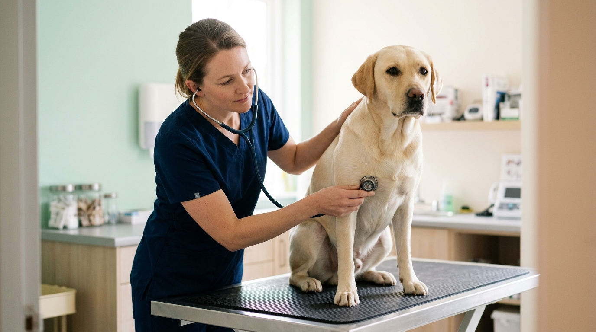

Service 01 — Illustrative Offering
General Veterinary Consultation
A general veterinary consultation provides a structured opportunity for a veterinarian to evaluate your pet's overall physical condition, listen to owner observations, and discuss everyday wellness habits.
Benefits & Purpose: Establishing a consistent clinical record helps identify gradual changes in weight, posture, coat condition, or behaviour early, supporting comfortable long-term care planning.
- Routine Health Assessment: Nose-to-tail physical examination of eyes, ears, coat, heart, lungs, and mobility.
- General Pet Wellness Discussions: Practical conversations covering life-stage nutrition, exercise, and daily behaviour.
- Health History Review: Documenting prior medical notes, diet changes, and home observations.
- Follow-up Consultation Information: Clear scheduling guidance for monitoring ongoing care plans.
